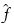

A Jones pupil data file (*.jpf) contains complete information about the polarization properties of the projection lens.
For more information, refer to the description of the keyword “pupilPolarization”.
When an optical model with an associated Jones pupil data file is exported from the Calibre nmModelflow tool, the Jones pupil data file is saved inside the associated optical model directory. You can access each optical model subdirectory from within the litho model directory.
The symbolic links access a local copy of the model files with an internally-generated structure, which may be subject to change in future releases.
ASCII text.
Comments can exist on any line. A comment line is any line that begins with ‘%’, ‘!’, ‘#’ or ‘;’.
A number of parameters and flags can be specified at the beginning of the file.
Each parameter is specified in a separate line.
The Jones pupil data file needs to be located in a path that is accessible during model generation.
(Currently only the grid type is supported.) The Jones pupil data must be given on a rectangular regular grid. Points outside of the pupil may be omitted. In any case, the program ignores Jones pupil data for points outside of the pupil. The number of grid points numx and numy may be explicitly specified, but this is not mandatory, since the program can calculate the grid size and step from the data.
Format of the Jones pupil data (default: real/imaginary)
Wavelength of the source in microns (default: 0.193).
Refractive index of the ambient medium of the last-lens-element (default:1.0 (vacuum)).
The numerical aperture (default: 1.0).
The magnification factor. A 4X reduction system corresponds to 0.25 magnification (default 0.25).
Field point (x,y) coordinates. Currently this value is not used by the program.
Specifies whether the Jones matrix for each pupil point is given relative to the x-y or s-p coordinate system. Default is XY.
Specifies whether the coordinates of a pupil point are normalized spatial frequencies , direction cosines of the respective k-vector, or relative to the numerical aperture NA. The following relations hold as shown:
,
If normalized pupil coordinates are used, the useful pupil is a unit circle with , inside (-1, 1).
If dircos pupil coordinates are used, the useful pupil is a circle with sx, sy inside
.
If NA pupil coordinates are used the useful pupil is a circle inside (-NA,NA). Default is normalized.
The string DATA must exist by itself on one line of the file. It signifies the beginning of the Jones pupil data, which must start immediately afterwards. An excerpt of a file would be as follows:
...
DATA
px py jssa jssp jspa jspp jpsa jpsp jppa jppp
-1 0 1 0 0 0 0 0 1 0
-0.99 -0.14 1 0 0 0 0 0 1 0
-0.99 -0.13 1 0 0 0 0 0 1 0
...The line “px py …” is ignored by the parser and may be omitted. Its purpose is to label the columns of Jones pupil data. From the previous excerpt it can be deduced that the data is given in an amplitude/phase format and s-p pupil coordinate system. It should be stressed however, that the format and coordinate system are specified by format and Efield_map keywords. In the previous example, the following two lines must exist in the beginning of the file, because these settings are different than the defaults:
format amp/phase
Efield_Map SPIn this example, the format is amplitude/phase and the s-p coordinate system is used to specify the polarization transformations. Because normalized pupil coordinates are used, non-zero pupil data can exist inside a unit circle only. The square grid has 201x201 points, which implies that the grid step is 0.01. Notice that the data appears to be representing an unpolarized pupil.
# this is a comment
% this is another comment
! and this is yet another comment
type grid 201 201
NA 0.5
pupil_coord normalized
format amp/phase
Efield_Map SP
DATA
px py jssa jssp jspa jspp jpsa jpsp jppa jppp
-1 0 1 0 0 0 0 0 1 0
-0.99 -0.14 1 0 0 0 0 0 1 0
-0.99 -0.13 1 0 0 0 0 0 1 0
...In this example, the format is real/imaginary and the x-y coordinate system is used to specify the polarization transformations. Because NA pupil coordinates are used, non-zero pupil data can exist inside a circle bounded by (-0.5, 0.5). The number of points of the square grid is not specified, but the step size can be deduced from the data to be 0.01. Notice that the data appears to be representing a pupil that acts as an x-polarization filter that allows only the x-component to go through unaltered while eliminating the y-polarized field.
type grid
NA 0.5
pupil_coord NA
format real/imaginary
DATA
px py jxxr jxxi jxyr jxyi jyxr jyxi jyyr jyyi
...
-0.48 -0.14 1 0 0 0 0 0 0 0
-0.48 -0.13 1 0 0 0 0 0 0 0
-0.48 -0.12 1 0 0 0 0 0 0 0
-0.48 -0.11 1 0 0 0 0 0 0 0
-0.48 -0.1 1 0 0 0 0 0 0 0
-0.48 -0.09 1 0 0 0 0 0 0 0
...